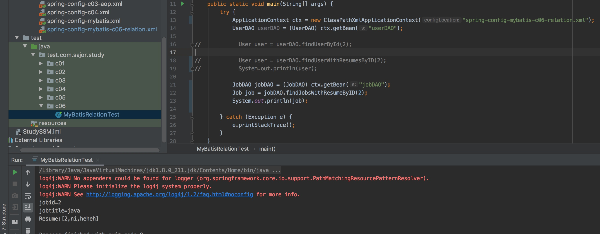

在上一章的基础上，我们还使用c06包接着添加功能。
1、数据库表准备
新建一个数据库表:job、jobresume 并添加几条数据
job 表
| 字段名称 | 类型 | 长度 |
|---|---|---|
| jobid | int | 11（主键） |
| jobtitle | varchar | 127 |
jobresume表
| 字段名称 | 类型 | 长度 |
|---|---|---|
| id | int | 11（主键） |
| jobid | int | 11 |
| resumeid | int | 11 |
2、在 model 包中创建 Job 类
package com.sajor.study.c06.model;
import java.util.List;
public class Job {
private Integer jobId;
private String jobTitle;
private List<Resume> resumeList; // 岗位关联的简历
@Override
public String toString() {
StringBuffer stringBuffer = new StringBuffer();
stringBuffer.append("jobid=");
stringBuffer.append(jobId);
stringBuffer.append("\n");
stringBuffer.append("jobtitle=");
stringBuffer.append(jobTitle);
for (Resume rs : resumeList) {
stringBuffer.append("\n");
stringBuffer.append("Resume:[");
stringBuffer.append(rs.getResumeId());
stringBuffer.append(",");
stringBuffer.append(rs.getResumeName());
stringBuffer.append(",");
stringBuffer.append(rs.getResumeDesc());
stringBuffer.append("]");
}
return stringBuffer.toString();
}
public Integer getJobId() {
return jobId;
}
public void setJobId(Integer jobId) {
this.jobId = jobId;
}
public String getJobTitle() {
return jobTitle;
}
public void setJobTitle(String jobTitle) {
this.jobTitle = jobTitle;
}
public List<Resume> getResumeList() {
return resumeList;
}
public void setResumeList(List<Resume> resumeList) {
this.resumeList = resumeList;
}
}
3、在 mapper 包中创建映射文件 JobMapper.xml、修改 ResumeMapper.xml
JobMapper.xml
<?xml version="1.0" encoding="UTF-8"?>
<!DOCTYPE mapper PUBLIC "-//mybatis.org//DTD Mapper 3.0//EN" "http://mybatis.org/dtd/mybatis-3-mapper.dtd">
<!-- namespace 表示命名空间 -->
<mapper namespace="com.sajor.study.c06.mapper.JobMapper">
<!-- 多对多嵌套查询:通过执行另外一条 SQL 映射语句来返回预期的特殊类型 -->
<select id="findJobWithResumesByID" parameterType="Integer" resultMap="JobWithResumeResult">
select * from job WHERE jobid=#{id}
</select>
<resultMap type="com.sajor.study.c06.model.Job" id="JobWithResumeResult">
<id property="jobId" column="jobid"/>
<result property="jobTitle" column="jobtitle"/>
<collection property="resumeList" column="jobid"
ofType="com.sajor.study.c06.model.Resume"
select="com.sajor.study.c06.mapper.ResumeMapper.findResumeById"></collection>
</resultMap>
<!-- 多对多嵌套结果查询:查询某岗位及其关联的简历详情 -->
<select id="findJobWithResumesByID2" parameterType="Integer" resultMap="JobWithResumeResult2">
select job.*,resume.*
from job,resume,jobresume
WHERE job.jobid=jobresume.jobid
and resume.resumeid=jobresume.resumeid and job.jobid=#{id}
</select>
<!-- 自定义手动映射类型 -->
<resultMap type="com.sajor.study.c06.model.Job" id="JobWithResumeResult2">
<id property="jobId" column="jobid"/>
<result property="jobTitle" column="jobtitle"/>
<!-- 多对多关联映射:collection -->
<collection property="resumeList"
ofType="com.sajor.study.c06.model.Resume">
<id property="resumeId" column="resumeid"/>
<result property="resumeName" column="resumename"/>
<result property="resumeDesc" column="resumedesc"/>
</collection>
</resultMap>
</mapper>
ResumeMapper.xml
<!--下面是新增内容:通过 jobid 查关联简历-->
<select id="findResumeById" parameterType="Integer" resultType="com.sajor.study.c06.model.Resume">
SELECT * from Resume where resumeid IN(
SELECT resumeid FROM jobresume WHERE jobid = #{id}
)
</select>
4、修改配置文件 mybatis-config-c06-relation.xml
配置JobMapper.xml的位置
<mapper resource="com/sajor/study/c06/mapper/JobMapper.xml" />
5、修 改 Spring 配 置 文 件 spring-config-mybatis-c06-relation.xml
在 spring 配置文件中配置 bean
<bean id="jobDAO" class="com.sajor.study.c06.dao.JobDAO"/>
6、新建一个 DAO 类 JobDAO
对数据库进行关联查询
package com.sajor.study.c06.dao;
import com.sajor.study.c06.model.Job;
import org.apache.ibatis.io.Resources;
import org.apache.ibatis.session.SqlSession;
import org.apache.ibatis.session.SqlSessionFactory;
import org.apache.ibatis.session.SqlSessionFactoryBuilder;
import java.io.InputStream;
public class JobDAO {
/**
* 根据用户编号查询用户及简历信息
*/
public Job findJobsWithResumeByID(int id) throws Exception {
// 1、读取配置文件
String resource = "mybatis-config-c06-relation.xml";
InputStream inputStream = Resources.getResourceAsStream(resource);
// 2、根据配置文件构建 SqlSessionFactory
SqlSessionFactory sqlSessionFactory = new SqlSessionFactoryBuilder().build(inputStream);
// 3、通过 SqlSessionFactory 创建 SqlSession
SqlSession sqlSession = sqlSessionFactory.openSession();
// 4、SqlSession 执行映射文件中定义的 SQL，并返回映射结果
Job job = sqlSession.selectOne("com.sajor.study.c06.mapper.JobMapper.findJobWithResumesByID", id);
// Job job = sqlSession.selectOne("com.sajor.study.c06.mapper.JobMapper.findJobWithResumesByID2", id);
// 5、关闭 SqlSession
sqlSession.close();
return job;
}
}
7、修改测试类 MyBatisRelationTest
JobDAO jobDAO = (JobDAO) ctx.getBean("jobDAO");
Job job = jobDAO.findJobsWithResumeByID(2);
System.out.println(job);
8、运行测试类

本文由 Sajor
创作，采用 知识共享署名4.0 国际许可协议进行许可
本站文章除注明转载/出处外，均为本站原创或翻译，转载前请务必署名
最后编辑时间为: 2019-08-02T10:46:50+08:00